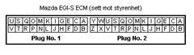
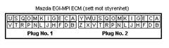
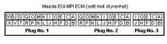
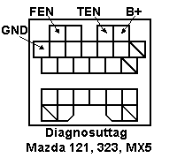
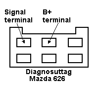

[1545]Fault codes,Mazda
General information
The engine control system constantly monitors the input signals from the various sensors in the injection system and compares them with defined limit values. If a signal violates these limits, the control unit stores the fault code in the memory. The fault code can easily be read out with a test lamp with LED.
The diagnostics socket
The six-pole green diagnostics socket is usually located to the left in the engine compartment.
A 6-pole green socket, used for fault code reading Mazda_read and other checks.
A single-pole green socket, used to check various switches which give signals to the control unit.
A single-pole socket, used for the engine speed.
A double-pole yellow socket, used to activate the pump relay. Jumper between the connections to ground the operating coil and energize the relay.
Appearance of the fault codes
The fault codes can be read off on LED of the test lamp. The meanings of the blinks are as follows:
The number of tens is indicated by 1.2-second blinks.
The number of units is indicated by 0.4-second blinks.
The lamp remains unlit for 1.6 seconds between tens and units.
The lamp remains unlit for 4 seconds between fault codes.
Ex.
1.2s 0.4s 1.2s 1.6s 0.4s 0.4s 0.4s 0.4s 0.4s
Fault code 23, two tens, an interval and three units
Fault code list
Mazda 121, 323 1.3 16V
Code | Description | Pin.no ECU | Pin.no Tetser |
02 | Revolution sensor (distributor) | 1G, 2E | 46, 3 |
03 | Cylinder identification sensor (distributor) | 1G, 2E | 46, 3 |
08 | Air mass meter | 2O | 8 |
09 | Coolant temperature sensor | 2Q | 9 |
12 | Throttle potentiometer | 2K, 2M | 6, 7 |
15 | Lambda sensor | 2N | 20 |
17 | Lambda sensor | 2N | 20 |
34 | Idle valve | 2T | 23 |
35 | Idle valve | 2R | 22 |

Mazda 323 1.6 – 1.8 – MX5 1.6
Code | Description | Pin.no ECU | Pin.no Tester |
2 | Revolution sensor | 2E | 3 |
3 | Cylinder identification sensor | 2G | 4 |
8 | Air flow meter | 2O | 8 |
9 | Coolant temperature sensor | 2Q | 9 |
10 | Air inlet temperature sensor | 2P | 21 |
12 | Throttle potentiometer | 2M | 7 |
14 | MAP-sensor | ||
15 | Lambda sensor | 2N | 20 |
17 | Lambda sensor | 2N | 20 |
25 | Soenoid valve, pressure regulator | 2T | 23 |
26 | EVAP | 2X | 25 |
34 | Idle valve | 2W | 12 |
41 | Solenoid valve – VICS | 2S | 10 |

Mazda 626 2.0i 16V
Code | Description | Pin.no ECU | Pin.no Tester |
2 | Revolution sensor | 1M | 49 |
3 | Cylinder indentification sensor 1 | 1N | 60 |
5 | Knock sensor | 1R | 62 |
8 | Air mass meter | 2E | 3 |
9 | Coolant temperature sensor | 2I | 5 |
11 | Air inlet temperature sensor | 2J | 18 |
12 | Throttle potentiometer | 2G | 4 |
15 | Lambda sensor | 2D | 15 |
17 | Lambda sensor | 2D | 15 |
25 | Solenoid valve pressure regulator | 2K | 6 |
26 | EVAP | 2P | 21 |
27 | EVAP | 2O | 8 |
28 | Solenoid valve EGR | 2N | 20 |
34 | Idle valve | 2Q | 9 |
36 | Relay heating lambda sensor | 2M | 7 |
41 | Solenoid valve VICS | 1C | 44 |

Mazda 626 2.2i
Code | Description | Pin.no ECU | Pin.no tester |
1 | Ignition pulses | 2I | 5 |
8 | Air flow meter | 2D | 15 |
9 | Coolant temperature sensor | 2Q | 9 |
10 | Air inlet temperature sensor | 2P | 21 |
12 | Throttle potentiometer | 2M | 7 |
14 | MAP-sensor | ||
15 | Lambda sensor | 2N | 20 |
16 | EGR-sensor | 2L | 19 |
17 | Lambda sensor | 2N | 20 |
25 | Solenoid valve pressure regulator | 2T | 23 |
26 | EVAP | 2O | 8 |
28 | EGR valve | 2Y | 13 |
34 | Idle valve | 2W | 12 |

Reading fault codes
Ground terminal B in the six-pole green diagnostics socket.
1. Connect a test lamp between battery plus (or battery minus) and terminal D in the six-pole green diagnostics socket
2. Switch on the ignition
3. Read off the fault codes on the test lamp
Deleting fault codes
The fault(s) indicated by the fault codes should be corrected before the fault codes are deleted.
1. Disconnect the negative terminal from the battery and press the brake pedal down hard for at least 20 seconds
2. Connect the negative terminal
3. Start the engine and let it run at 2000 rpm for three minutes
4. Check that the fault codes have been deleted
Reading fault codes

Jumper between “TEN“ and “GND“ in the socket. Connect the positive end of the LED tester to “B+“ and the negative end to “FEN“. Switch on the ignition. The LED tester should light up.
The tester should remain lit for three seconds. If the EGI-S system detected no faults, the lamp goes out. If there are any fault codes, the lamp should start to blink after three seconds. To cancel the readout, remove the link between “TEN“ and “GND“ in the diagnostics socket and switch off the ignition.
NOTE: If the LED tester does not light up or blink, reverse the polarity of the connections to the tester.

On the Mazda 626 there is a single wire with a spade connector which must be grounded. Remove the cover of the six-pole socket (if any). Connect the positive pole of the LED tester to “B+“ in the socket and the negative pole to “Signal terminal“. Switch on the ignition. The LED tester should light up.
The tester should remain lit for three seconds. If the EGI-MPI system detected no faults, the lamp goes out. If there are any fault codes, the lamp should start to blink after three seconds. To cancel the readout, remove the link between the single spade connector and ground and switch off the ignition.
Fault codes may also be read directly from the control unit. On the 121 and 323, it is usually located on the left in the driver area. On the MX5 it is located under the carpet in front of the foot space on the passenger side. On the 626 it is normally located behind the central console.